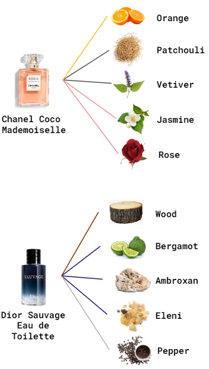
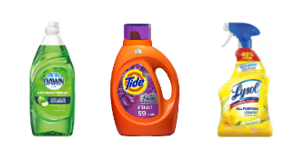

Clear gender roles in fragrance are not biologically predetermined
but culturally constructed.
Although we may recognize floral scents as feminine and musky smells
as masculine, these assignations are based on recent marketing.
In Ancient Rome, floral scents were associated with men, with
Alexander the Great's teacher, "Theophrastus", recommending, that
"rose-perfume and kypros[...] seem to be the best suited to men, as also lily-perfume."
Although fragrances often sink to our subconscious, they are a subtle enforcement
of social norms between men and women. The arbitrary associations in popular
fragrances in today's market stemmed from the rise in gendered stereotypes in the late 19th century. They are a part of existing social norms that dictate that men and women
should act, look, and smell a certain way.
Notes within fragrances are different scent layers that make it unique. They are categorized in three parts.
"Head" notes appear within 15 minutes.
"Heart" notes appear after 3-4 hours.
"Body" notes appear after 5 to 8 hours and linger the longest.
We surveyed the 20 best-selling perfumes for both men and women.
Source: Ulta Beauty
Notes within the 20 most popular perfumes for both men and
women were mapped.

Gendered Notes
Which notes appear most frequently in male vs female scents?
We added all the occurrences of notes in all surveyed perfumes.
In women perfumes, floral notes ring high. With men, woody notes are dominant.
|
Female Notes |
Male Notes |
Do fragrances condition women to clean more than men?
To test this theory, we surveyed the 20 name brand cleaning products.
The most popular notes in cleaning products are "citrus" and "floral" scents,
popular notes for both men and women. However,
"wooded" scents, a defining male scent, was rarely seen.
